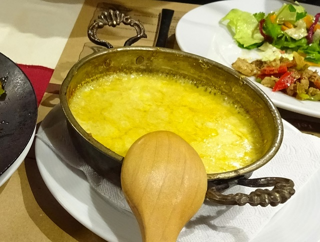

Muchlama (geschmolzener Käse)

Zutaten für
300 ml
Wasser
700g
Käse, türkischer, (Kolot oder Tel), alternativ z.B. Greyerzer, Emmentaler, Appenzeller
10 g
Maismehl
100g
süße Sahne
100 ml
Milch
1
Ei(er)
75g
Butter
Zubereitung
Erhitzen Sie in einem großen schweren Topf (am besten aus emailliertem Gusseisen) das Wasser bis kurz
unter dem Siedepunkt. Reiben Sie inzwischen den Käse grob und vermischen Sie die Käseraspel mit dem
Mehl. Geben Sie den Käse nach und nach in das Wasser, das Sie stets unter dem Siedepunkt halten sollten.
Schmelzen Sie nie mehr als 2 - 3 EL Käse auf einmal. Wenn eine Portion geschmolzen ist, können Sie die
nächste dazugeben.
Rühren Sie Rahm und Milch ein, wenn der Käse ganz geschmolzen ist. Muhlama sollte die Konsistenz eines dünnen Breis haben. Geben Sie eventuell noch etwas Käse oder Flüssigkeit dazu, um diese Konsistenz zu erreichen. Jetzt können Sie auch das rohe Ei einrühren, die das Muhlama noch gehaltvoller machen. Es darf danach nicht mehr kochen, sonst gerinnt das Ei.
In eine angewärmte Schüssel geben, mit zerlassener Butter übergießen, sofort auftragen und mit Brotstückchen essen, die man mit der Hand in den Käse tunkt
Rühren Sie Rahm und Milch ein, wenn der Käse ganz geschmolzen ist. Muhlama sollte die Konsistenz eines dünnen Breis haben. Geben Sie eventuell noch etwas Käse oder Flüssigkeit dazu, um diese Konsistenz zu erreichen. Jetzt können Sie auch das rohe Ei einrühren, die das Muhlama noch gehaltvoller machen. Es darf danach nicht mehr kochen, sonst gerinnt das Ei.
In eine angewärmte Schüssel geben, mit zerlassener Butter übergießen, sofort auftragen und mit Brotstückchen essen, die man mit der Hand in den Käse tunkt
Rezept erstellt von

Yener Bas